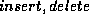

Concurrency Control


Next: Recovery
Up: Internal Design
Previous: Delete the currently
In MINIREL, two phase locking is used. For special file structure,
e.g. linear hashing, special protocol (at index level) is needed to
achieve high concurrency.
To make life easier, we consider the whole linear hashing index as a
sort of 2-level ``tree'' structure. The upper level contains all the
header information including the directory. (See Figure 1.)
Useful header information includes , and the whole
directory. The information will not be changed by any reader, but
could be changed by some updaters. The lower level is individual
bucket. Within one bucket, if overflow pages exist, it can be viewed
as a sub-tree. For different operations, different protocols are used:
- Opening index: when the index is opened, the root page is first
locked in Intentional Shared mode to prevent the index from being
destroyed. (See the discussion about destroying index for details.)
Then a Shared lock on the header page is required before the header
page is read to get the header information. After that, the lock on
the header page is released. The Intentional Shared lock on the root
page is not released until the close of the index.
-
Creating index: when the index is created, the function DB::add_file_entry will be called to add the new file entry. Since
will hold the Exclusive lock on the file entry until the end of
transaction, no other transactions can access this index during the
transaction. Hence no locking (even for any subsequent operations) is
needed at all. For uniformity purpose, the root page is still locked in
Intentional Shared mode.
-
Reader: In linear hashing, reader is equal to the get_next()
method of LinearHashingScan. Reader first requires a Shared lock
on header page to read the header information. If it's
successful , the header page is read and the PageId of the primary
page of the bucket it
wants to scan is found. Then a Shared lock on that bucket's primary
page is required before the Shared lock on the header page is released. If
it's successful, the primary page of the bucket is read in and the
page is searched for matched record. Before reading any overflow page
(if existing), a Shared lock on that page must be required before the
Shared lock on the previous page can be released. For each
scan, there is a flag called which indicates whether there has
been any matched record on the currently scanned page. After a page
has been scanned, if the flag is true, the Shared lock cannot be
released (because of two phase locking protocol). Otherwise it's released.
-
Updater: In linear hashing, updater includes  and
. Updaters will first proceed down the index as if
they were readers (using the above protocol for readers) until they
get to the page they are going to modify. An Exclusive lock on that
page is required. If the update is safe, i.e. it will not trigger any
split or merge and hence it will not modify any header information,
then the update will proceed and the Exclusive lock is held until the
end of the transaction. On the other hand, if the update is not safe,
the updater is re-tried and this time an Exclusive lock on the header
page is required before it goes down to the bucket to make sure anyone
else cannot read any piece of header information during the update.
Then it will only require Shared lock on each page of the bucket
before reading it. Again, (Read) lock coupling is used when proceeding
down the chain of one bucket. If it's found out that the current page
is going to be modified, an Exclusive lock is required on the page. It
should be pointed out that if the updater finds out that the update is
safe while it's holding an Exclusive lock on the header page, the
Exclusive lock is released right away to get higher concurrency.
-
Destroyer: Destroying an index is different from updating it. If
someone opens an index, (s)he expects some operation can be done on
this index. Therefore the index cannot be destroyed before all other
users have closed the index. If we only had a header page without the
preceding root page, we would not be able to tell a destroyer from an
updater given the locking modes we have. That's the reason why we
introduce the root page. Since it's locked in Intentional Read mode
when an index is opened, no destroy is allowed before all other users
have closed the index. For updater however, only Exclusive (or Shared)
lock on header page is required.
Next: Recovery
Up: Internal Design
Previous: Delete the currently
Weiqing Huang
Sun May 14 16:22:27 CDT 1995